Introduction to (some) JOREK diagnostics
This tutorial will show you how to run some of the important JOREK diagnostics. We assume that you already know the basics of how to run JOREK. Some information about how to analyze JOREK simulations was already given in the tutorial Running JOREK for the first time. Here, you get a bit more information and learn about a few additional diagnostics.
Coordinates
For any interpretation of simulation data (and already for setting up the simulations), you should make sure you understand the coordinate system(s) used in JOREK well and how this relates to the coordinate systems used in the experimental devices. In JOREK we have the following:
The basic cylindrical coordinate system $(u1,u2,u3)=(R,Z,\phi)$ of JOREK is given by
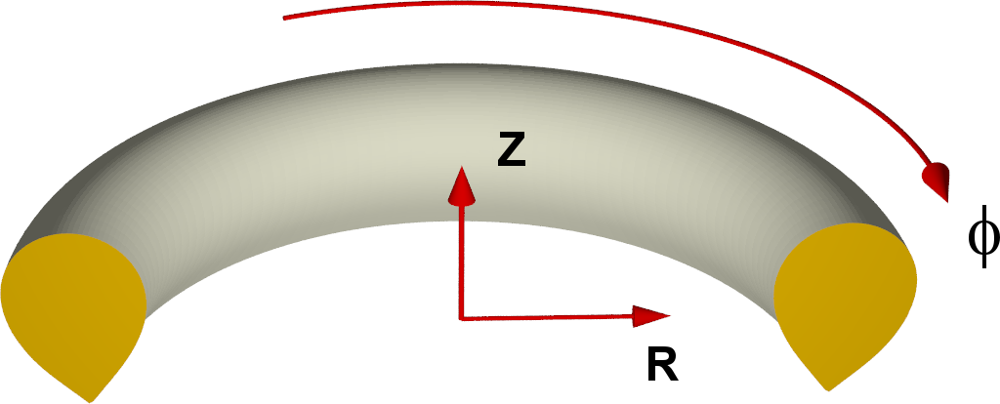
\[\begin{aligned} x&=R \cos\phi \\ y&=-R \sin\phi \\ z&=Z \\ \end{aligned}\]where $(x,y,z)$ denotes Cartesian coordinates. Thus, $\phi$ goes clockwise if looked at from above! See coordinates for more details. ASDEX Upgrade, for instance, uses a definition of $\phi$ going in the opposite direction!
qprofile.dat
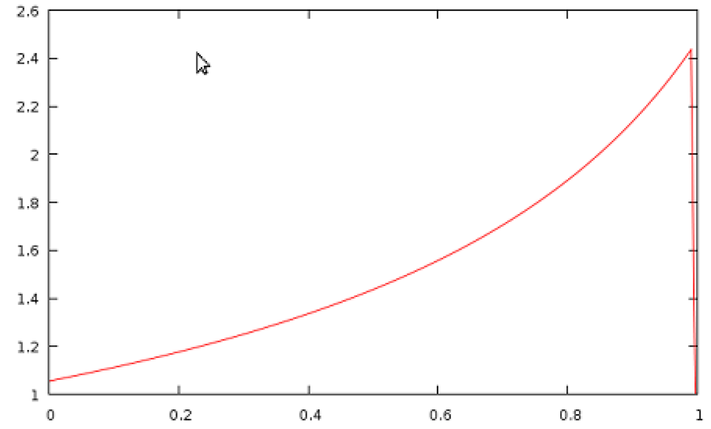
When the code is finished, calculating the equilibrium, it automatically calculates the q-profile and writes it out to qprofile.dat. If you need to plot the qprofile at a different time point during the simulation instead, jorek2_postproc described further below will help you to easily do that.
plot_grids.sh
The script ./util/plot_grids.sh allows to plot the simulations grids. Via the option -o xpoint you can for instance plot only the X-point grid. The script uses the data written out by JOREK into the grid_*.dat ascii files and plots them with gnuplot. You can also plot directly to .ps or .png files (check with option -h).
plot_live_data.sh
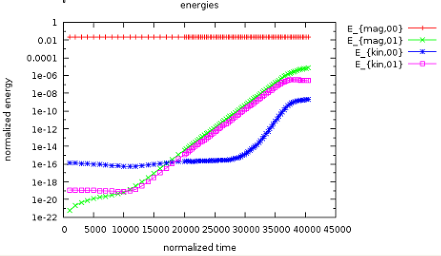
The code writes out some information to macroscopic_vars.dat while running. The script plot_live_data.sh allows to easily extract and plot data from this file. When you call the script without options, it will plot directly the evolution of the magnetic and kinetic energies (see example). When you have the plotting window open,
- the right mouse button allows you to zoom in
- pressing
Uunzooms again - pressing
Lswitches between logarithmic and non-logarithmic y-axis - pressing
Eupdates the plot in case there is new data written by the running simulation.
If you call the script with option -h, the usage information is printed. You can for instance directly plot into a .ps file if necessary. In case you need to further adapt the plot, you can copy the local_plot.gp file to a different name e.g. my_plot.gp, adapt it and then run gnuplot my_plot.gp.
The option -l lists all quantities you can plot. Presently this is:
* axis
* betas
* current
* diag_coil_curr
* energies
* growth_rates
* heatingpower
* input_profiles
* particlecontent
* particlesource
* thermalenergy
* times
You can select which quantity to plot with the option -q. It is sufficient to type the start of the quantity. For instance the growth rates can be plotted with:
./util/plot_live_data.sh -q g
Note:
- You may need to make a recent version of
gnuplotavailable before you can use this diagnostics. Usually this works viamodule load gnuplot. Best add this to your.bashrclogin script. - The
plot_live_data.shscript always extracts the data frommacroscopic_vars.datinto a file called<quantity-name>.datfor plotting. Thus, you can easily also plot the data yourself with an arbitrary tool. This makes it simple to compare two simulations:
gnuplot
> set log y
> plot 'case1/energies.dat' using 1:3 with lines, ''case2/energies.dat'' using 1:3 with lines
jorek2vtk
You have already come across jorek2vtk in the tutorial Running JOREK for the first time. Some additional information is provided here. As a reminder, you need to compile the diagnostics via make -j 8 jorek2vtk. Make sure you use the same hard-coded parameters as the main binary. To actually convert the .h5 restart files into .vtk files, you simply run
./util/convert2vtk.sh -j 8 jorek2vtk inputfile
Note:
convert2vtk.shautomatically puts the.vtkfiles into reasonably named sub-folders likevtk_no0_iplane1. Those can easily be plotted with Paraview or Visit.convert2vtk.shautomatically compares the time stamps of already existing.vtkfiles to the corresponding.h5files: If the.vtkfile is newer, no conversion is needed. But if the.h5file is newer, then the.vtkfile is automatically updated.
Available options:
- The option
-sishould denormalize all quantities. - The option
-no0excludes the $n=0$ mode from the VTK files such that you can only look at the non-axisymmetric components. - The option
-i_torallows to select one of the toroidal harmonics. Cosine and sine are counted separately here. - The option
-iplaneallows to write out data in a different toroidal plane. Default is plane 1 (i.e., $\phi=0$). - The option
-only XXXXX-XXXXXallows to convert only some of the restart files. - The option
-nsub Xallows to change the number of sub-points used to represent each Bezier element. The default value is 5. - The option
-hexplains how the script is used.
Identifying a problem: In case something goes wrong with the conversion it is a good idea to compile jorek2vtk again with debugging options, and first try the conversion the “manual” way with
cp jorekXXXXX.h5 jorek_restart.h5
./jorek2vtk < ./inputfile
Typical problems you may run into are that you compiled jorek2vtk with the wrong model or wrong hard-coded parameters or that an .h5 restart file is damaged such that it cannot be read into jorek2vtk properly.
jorek2vtk_3d
The compilation and usage is almost identical to jorek2vtk, however:
- 3D data is written out.
- That means you will end up with huge files. You should use the
-onlyoption to convert only some of the files. - You may need to edit the
jorek2vtk_3d.f90file to adapt the number of toroidal planes written out. - The
.vtkfiles end up on subfolders calledvtk3d_no0or similar.
$\rightarrow$ Consider to use the Paraview-plugin instead
jorek2_poincare
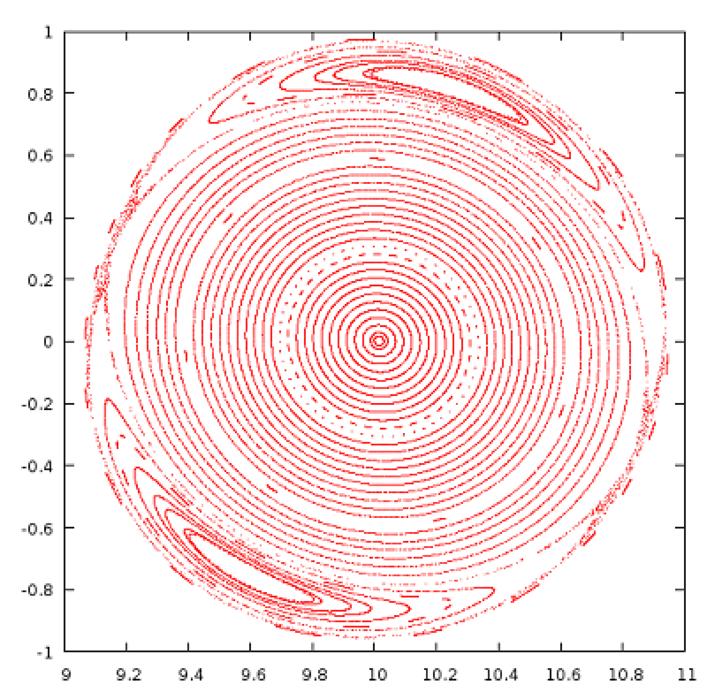
To visualize the magnetic topology, Poincare plots are a very useful tool. jorek2_poincare allows to trace a specific field lines for a given number of toroidal turns. A point is then marked each time the field line passes through the $\phi=0$ plane. You need to create a small additional file named stpts which describes the field lines to be traced. The following example traces 100 field lines started between $Z=0$ and $Z=1$ at $R=10$ and $\phi=0$. $R,Z,\phi$ and n_turns is interpolated for the field lines not explicitly in between the given ones:
# n_lines
40
# nr R_start Z_start phi_start n_turns
1 10.000 0.00 0.000 1000
40 10.000 1.00 0.000 2500
It is also possible to specify each field line individually:
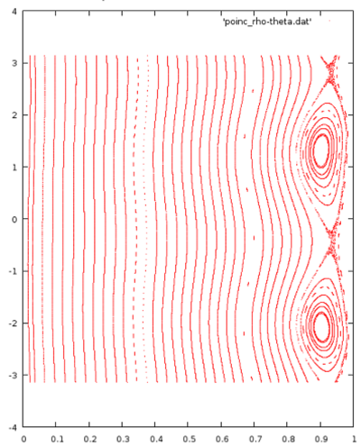
# n_lines
3
# nr R_start Z_start psi_start n_turns
1 10.000 0.00 0.000 1000
2 10.000 0.50 0.000 1200
3 10.000 1.00 0.000 3000
Or you can specify several sets of field lines:
# n_lines
80
# nr R_start Z_start phi_start n_turns
1 10.000 0.00 0.000 1000
40 11.000 0.00 0.000 2500
41 10.000 0.00 0.000 1000
80 10.000 1.00 0.000 2500
Now you can simply run the diagnostics by doing:
cp jorekXXXXX.h5 jorek_restart.h5
./jorek2_poincare < ./inputfile
As a result, you get two ASCII files which contain the data in two different representations:
poinc_R-Z.datcontains the points in $(R, Z)$ coordinatespoinc_rho-theta.datcontains the points in $(\rho_\text{pol}, \theta)$ coordinates, where $\theta$ is the poloidal angle and $\rho_\text{pol}=\sqrt{\Psi_N}$.
Warning: jorek2_poincare is a useful but rather old diagnostics. You may need to edit the source code to increase manually the n_phi value in order to get a clean Poincare plot (in particular for larger mode numbers). The program should in principle be re-implemented in a cleaner way at some point…
jorek2_powers
This diagnostics makes only sense for model3XX and X-point cases. It calculates for instance the heat fluxes to the divertor targets. Note that you presently need to set manually in the source code diagnostics/jorek2_powers.f90 source code three parameters before compilation:
R_in_out # set to a value between the inner and outer target plate
Z_wall_in # upper limit of inner divertor target
Z_wall_out # lower limit of outer divertor target
It might be a nice exercise for one of you to detect these three values automatically, which would not be too complicated…
The tool writes out the calculated quantities directly onto the screen:
inner/outer wall/divertor parallel convection : -0.11942676E-08 -0.34636717E-20 0.10706467E+00 0.48405278E+00 [MW]
inner/outer wall/divertor parallel kinetic energy : -0.38361754E-10 0.13592082E-46 0.53535814E-01 0.24202235E+00 [MW]
inner/outer wall/divertor parallel conduction : 0.54521383E-06 0.11287870E-07 -0.57674292E-01 -0.80325170E-01 [MW]
inner/outer wall/divertor perp. conduction : 0.12950011E+01 0.40278144E+01 -0.13424678E+00 -0.26235797E+00 [MW]
inner/outer wall/divertor energy diffusion : 0.85255108E-02 0.76551935E-01 0.10318817E-02 -0.51809035E-03 [MW]
inner/outer wall/divertor particle diffusion : 0.23624058E+02 0.21243131E+03 0.25594812E+01 0.18333358E+00 [10^20 /s]
inner/outer wall/divertor particle convection : -0.20010146E-05 -0.58675714E-17 0.39754300E+02 0.13068614E+03 [10^20 /s]
inner/outer wall/divertor total area : 0.61033015E+02 0.87484798E+02 0.42806246E+01 0.67975876E+01 [m^2]
inner/outer wall/divertor total length : 0.38794511E+01 0.38347953E+01 0.26095161E+00 0.32175932E+00 [m]
inner/outer wall/divertor total radius (avg) : 0.25038867E+01 0.36308686E+01 0.26107620E+01 0.33623569E+01 [m]
inner/outer wall/divertor Q : 0.16895744E-07 0.30984143E-19 0.39588715E-01 0.23191647E+00 [MW/m^2]
inner/outer wall/divertor wetted area : -0.70684526E-01 -0.11178852E+00 0.27044239E+01 0.20871859E+01 [m^2]
inner/outer wall/divertor wetted length : -0.44929316E-02 -0.49001212E-02 0.16486467E+00 0.98795565E-01 [m]
It also exports them to powers_time.out and powers_time_sum.out. Since the code appends to the files, you can do something in bash like the following to collect the data from all restart files:
for f in `ls jorek[0-9]*.h5`; do
cp $f jorek_restart.h5
./jorek2_powers < ./inputfile
done
For a detailed understanding of the output of these diagnostics, you will need to look in detail at the source code itself and/or ask.
jorek2_target2vtk
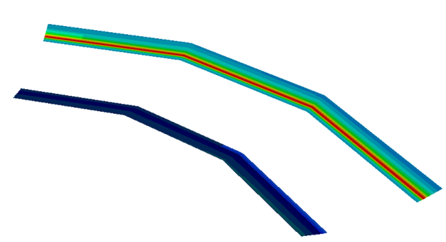
Allows to write out the target heat fluxes to the divertor targets as a VTK file for plotting. Compile:
make -j 8 jorek2_target2vtk
Run:
cp jorekXXXXX.h5 jorek_restart.h5
jorek2_target2vtk < inputfile
Now you can plot the jorek_tmp.vtk file.
jorek2_postproc
This tool is meant to allow for analyzing simulations in various ways with simple scripts. It can also be used interactively. Integrating new own diagnostics is comparably easy.
First interactive example
Let's start with an example of interactive usage. After you call ./jorek2_postproc (don't pipe in the namelist input file), you get a simple prompt where you can type your commands. The basic usage is also printed for you:
=========================================================================
Help topic: getting_started
-------------------------------------------------------------------------
Welcome to the interactive postprocessing tool JOREK2_POSTPROC!
An example to get you started:
namelist input # Read namelist input file
jorek-units # Select JOREK units
for step 100 to 200 do # Do the following for severl time steps:
expressions Psi_N T rho # Select physical expressions
mark_coords 1 # Mark first expression as coordinate
set surfaces 200 # Number of flux surfaces
average # Toroidal and poloidal average
expressions R rho T Psi Er # Select expressions
mark_coords 1 # Mark first expression as coordinate
set linepoints 200 # Number of points along a line
midplane # Midplane profiles
done
All output is written into subfolder postproc/
Type "help" for general usage information or, e.g., "help average" for
command-specific help.
Documentation: http://jorek.eu/wiki/doku.php?id=jorek2_postproc
=========================================================================
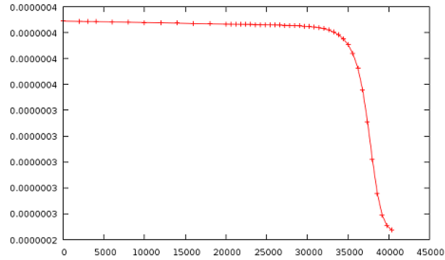
As a very simple example, you can type to write out the evolution of the temperature at the center over time:
namelist intear
expressions t T
for step 0 to 999 do
point 9.6 -0.7 0.
done
To check what “expressions” are available, simply type in expressions.
jorek2_postproc will read in all restart files available in the specified range and evaluate the commands inside the loop for each of them. It is possible to have many different evaluations in the same loop of course.
The result is written out to postproc/exprs_at_R9.6000_Z-0.700_p0.000_s00000..00999.dat, which can easily be plotted with gnuplot or other tools.
Running with a script
If you put the same commands from above into a text file, e.g., postproc_script, you can easily re-run your analysis when the simulation has continued further, or apply the same analysis to a different case:
./jorek2_postproc < ./postproc_script
A few examples for analysis you can do
Averaged profiles
=========================================================================
Help topic: average
-------------------------------------------------------------------------
Usage:
average
Determine poloidally and toroidally averaged profiles.
Examples:
set surfaces 200
expressions Psi_N rho T Er
mark_coords 1
for step 1 to 200 do
average
done
=========================================================================
This provides profiles only up to $\Psi_N=1$.
Basic properties of the plasma state
=========================================================================
Help topic: equil_params
-------------------------------------------------------------------------
Usage:
equil_params
Output equilibrim parameters (axis, X-point, limiter).
Examples:
for step 1 to 200 do
equil_params
done
=========================================================================
Average energy spectrum during a specified time window
=========================================================================
Help topic: energy_spectrum
-------------------------------------------------------------------------
Usage:
energy_spectrum tmin tmax
Output the energy spectrum in the given time window.
Examples:
for step 200 do
energy_spectrum 150. 3000.
done
=========================================================================
Flux surfaces (Psi contours)
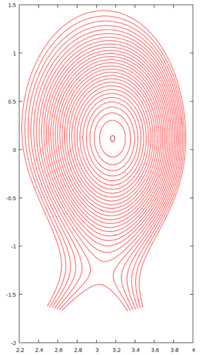
===========================================================
Help topic: fluxsurfaces
-----------------------------------------------------------
Usage:
fluxsurfaces
Output flux surfaces of the axisymmetric part of the field.
Examples:
set surfaces 100
for step 100 do
fluxsurfaces
done
===========================================================
Various integral quantities like particle content, current, etc.
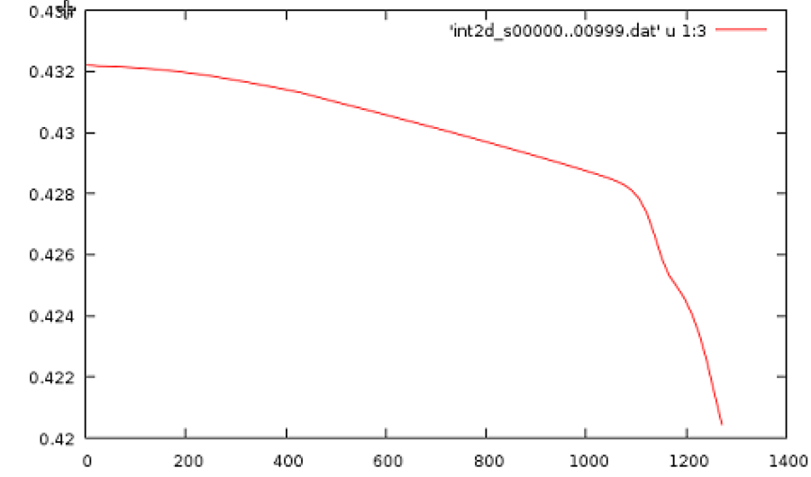
=========================================================================
Help topic: int2d
-------------------------------------------------------------------------
Usage:
int2d
"int2d" calculates various 2d integrals (calls integrals.f90) and outputs
the results to file the file int2d_...
Examples:
int2d
=========================================================================
Integral along a line in a poloidal plane (e.g. line integrated density)
=========================================================================
Help topic: int_along_pol_line
-------------------------------------------------------------------------
Usage:
int_along_pol_line R0 Z0 R1 Z1 phi
Integrate expressions along line from (R0,Z0,phi) to (R1,Z1,phi).
Examples:
set linepoints 500
expressions R rho T E_r
mark_coords 1
for step 0 to 100 do
int_along_pol_line 1.6 0.5 1.7 0.5 0.
done
=========================================================================
Profiles across the midplane
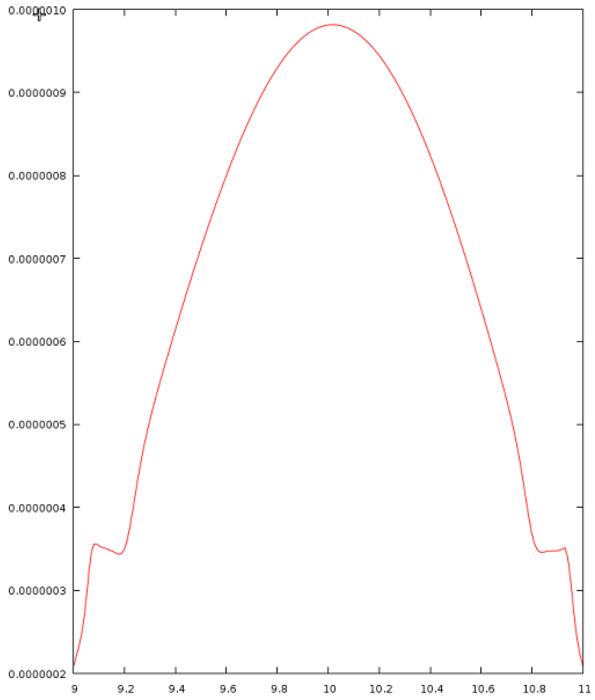
=========================================================================
Help topic: midplane
-------------------------------------------------------------------------
Usage:
midplane
Output toroidally averaged midplane profiles.
Examples:
set linepoints 200
for step 1 to 100 do
expressions R rho T Psi Er
mark_coords 1 # mark first expression as coordinate
midplane
done
=========================================================================
Values at a given point
=========================================================================
Help topic: point
-------------------------------------------------------------------------
Usage:
point R Z phi
Determine the value of a variable at position (R,Z,phi).
Examples:
for step 1 to 100 do
expressions rho T Psi Er
point 1.6 0.0 0.0
done
=========================================================================
Profiles along a straight line
=========================================================================
Help topic: pol_line
-------------------------------------------------------------------------
Usage:
pol_line R0 Z0 R1 Z1 phi
Expressions along line from (R0,Z0,phi) to (R1,Z1,phi).
Examples:
set linepoints 500
expressions R rho T E_r
mark_coords 1
for step 0 to 100 do
pol_line 1.6 0.5 1.7 0.5 0.
done
=========================================================================
Quantities in a rectangular area in HDF5 format (often requested by experimentalists)
=========================================================================
Help topic: rectangle
-------------------------------------------------------------------------
Usage:
rectangle Rmin Rmax nR Zmin Zmax nZ phi
Expressions on a rectangular area in R,Z. Produced an HDF5 file.
Examples:
expressions phi rho T E_r
for step 0 to 100 do
rectangle 1.7 2.1 10 -0.3 0.3 10 0.
done
=========================================================================
q-profile during the simulation
=========================================================================
Help topic: qprofile
=========================================================================
Separatrix location
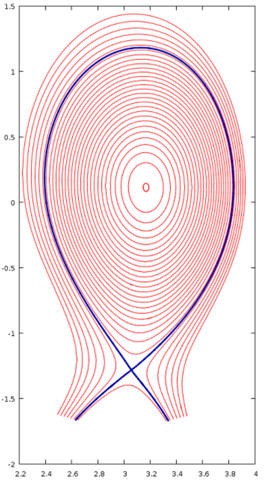
=========================================================================
Help topic: separatrix
-------------------------------------------------------------------------
Usage:
separatrix
Output the separatrix of the axisymmetric part of the field.
Examples:
for step 100 do
separatrix
done
=========================================================================
(In the plot on the right, the separatrix and the fluxsurfaces are plotted at the same time)
Profiles at given R,Z versus phi
=========================================================================
Help topic: tor_line
-------------------------------------------------------------------------
Usage:
tor_line R Z phi0 phi1
Expressions along line from (R,Z,phi0) to (R,Z,phi1).
Examples:
set linepoints 500
expressions phi rho T E_r
mark_coords 1
for step 0 to 100 do
tor_line 1.6 0.1 0. 3.141592
done
=========================================================================
Expressions available
One of the main advantages here is, that a lot of different “expressions” are ready for you to use already, not only the JOREK variables. The following expressions are available for analysis at present. It is pretty easy to add new ones yourself in diagnostics/new_diag/mod_expression.f90 (see also further below). The command si-units allows to switch to denormalized units. You can list the available expressions by simply typing expressions in jorek2_postproc interactively.
List of Diagnostic Expressions:
--------------------------------------------------------------------------------
Number | Name | Description
--------------------------------------------------------------------------------
000001 | R | Cylindrical Coordinate R (== Major Radius)
000002 | Z | Cylindrical Coordinate Z
000003 | phi | Cylindrical Coordinate phi
000004 | theta | Poloidal Angle With Respect to Magnetic Axis
000005 | theta_star | Poloidal Straight Field Line Angle (for flux surfaces)
000006 | length | Length Along Poloidal Line (for poloidal lines)
000007 | r_minor | Minor Radius From A = r_minor^2 pi (for flux surfaces)
000008 | x | Cartesian Coordinate x
000009 | y | Cartesian Coordinate y
000010 | z | Cartesian Coordinate z (== Cylindrical Z)
000011 | Psi_N | Normalized Poloidal Magnetic Flux
000012 | xjac | 2D Jacobian in the Poloidal Plane
000013 | t | Simulation time
000014 | Psi | Poloidal Magnetic Flux
000015 | u | Velocity Stream Function
000016 | Phi | Electric Potential Phi
000017 | zj | Toroidal Current Density Multiplied by 1/R
000018 | currdens | Physical Toroidal Current Density (== zj/R)
000019 | omega | Toroidal Vorticity Component
000020 | rho | Mass Density
000021 | ne | Electron Density
000022 | T | Temperature (Electrons plus Ions)
000023 | Te | Electron temperature (assuming Ti=Te)
000024 | vpar | Parallel Velocity (along magnetic field lines)
000025 | eta_T | Temperature Dependent Resistivity
000026 | visco_T | Temperature Dependent Viscosity
000027 | zkpar_T | Temperature Dependent Parallel Heat Diffusivity
000028 | dprof | Particle Diffusivity
000029 | zkprof | Perpendicular Heat Diffusivity
000030 | pres | Total Pressure
000031 | B_abs | Norm of the Magnetic Field Vector
000032 | B_tor | Toroidal Magnetic Field Component
000033 | B_R | Magnetic Field Component Along R
000034 | B_Z | Vertical Magnetic Field Component
000035 | B_theta | Poloidal Magnetic Field Component
000036 | Er | Radial Electric Field
000037 | Vtheta_i | Ion Poloidal Velocity
000038 | Mach_par | Parallel Mach Number
000039 | Mach_pol | Poloidal Mach Number
000040 | V_sound | Sound Speed
000041 | V_neo | Neoclassical Velocity
000042 | Vperp_e | Electron Perpendicular Velocity
000043 | Vperp_i | Ion Perpendicular Velocity
000044 | V_ExB | ExB Velocity
000045 | Vstar_e | Electron Diamagnetic Velocity
000046 | Vstar_i | Ion Diamagnetic Velocity
000047 | ki_neo | Neoclassical Heat Diffusivity
000048 | mu_neo | Neoclassical Friction Coefficient
--------------------------------------------------------------------------------
new_diag
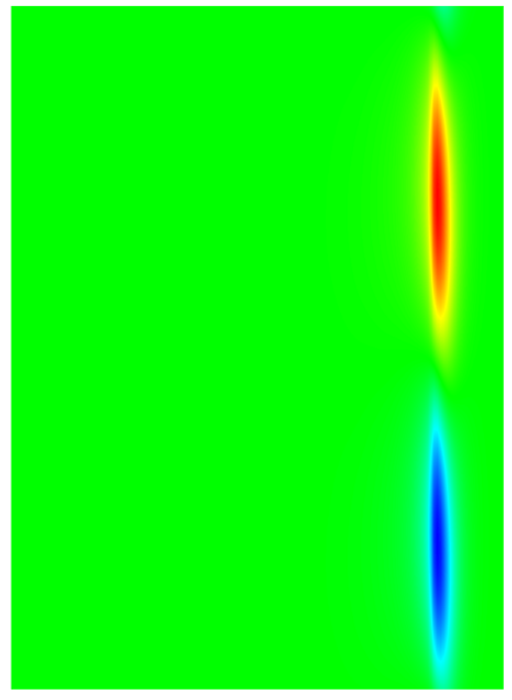
This is a framework you can use to build quite a few diagnostics yourself. It is also used for a lot of the jorek2_postproc features in the background. The implementation is in diagnostics/new_diag/ and split into a few different modules:
mod_new_diag: Main module you need to include to access the functionality of this framework.mod_expressions: Provides a lot of expressions you can easily evaluate as described above forjorek2_postprocmod_position: Data structure for selecting pol/tor positions to evaluate expressions at.mod_straight_field_line: Used for reconstructing straight field line coordinates (seejorek2_fourbelow).mod_four_filter: Allows to select specific Fourier modes of evaluated expressions.mod_diag_output: Write out the data in various ways.
You can try out the functionality by editing diagnostics/new_diag_demo.f90 and compiling with make -j 8 new_diag_demo. An example of what you can put there:
[...]
! --- Normal initialization
allocate(node_list)
allocate(element_list)
allocate(bnd_elm_list)
allocate(bnd_node_list)
my_id = 0
call initialise_parameters(my_id, "__NO_FILENAME__")
call det_modes()
call import_restart(node_list, element_list, 'jorek_restart', rst_format, ierr)
call initialise_basis()
call boundary_from_grid(node_list, element_list, bnd_node_list, bnd_elm_list, .false.)
! --- Initialize the plasma equilibrium data structure
call update_equil_state(node_list, element_list, bnd_elm_list, xpoint, xcase, equil_state)
call print_equil_state(equil_state, .false.)
! --- Initialize the new_diag framework and print some information (.true.)
call init_new_diag(.true.)
expr_list = exprs((/'R ', 'phi ', 'pres ' /), 3, 2)
call create_pol_pos(pol_pos_list, ierr, node_list, element_list, equil_state, &
Rstart=3.17, Rend=3.92, n=150, Z=0.116)
call create_tor_pos(tor_pos_list, ierr, nphi=150)
call eval_expr(equil_state, JOREK_UNITS, expr_list, pol_pos_list, tor_pos_list, result, ierr)
call reduce_result_to_2d(ierr, result, res2d, i2=1)
call write_vtk_2d(ierr, expr_list, res2d, 'testA.vtk', (/1,2/))
call apply_four_filter(result, simple_filter(n=6), 2, ierr)
call reduce_result_to_2d(ierr, result, res2d, i2=1)
call write_vtk_2d(ierr, expr_list, res2d, 'testB.vtk', (/1,2/))
[...]
jorek2_four
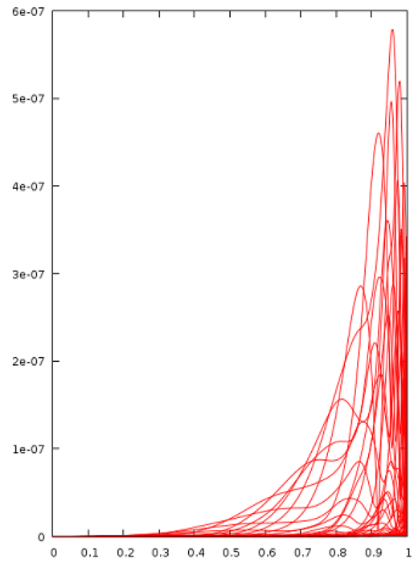
Compile via make -j 8 jorek2_four. Then create a file in the run folder called four_params.nml:
&four_params
nstpts = 600 ! number of psi_N values
nmaxsteps = 2000
deltaphi = 0.2
nsmallsteps = 3
rad_range = 0.001, 0.999
nTht = 120
/
jorek2_four performs the 2D Fourier analysis in magnetic coordinates (straight field line coordinates; Pest coordinates).
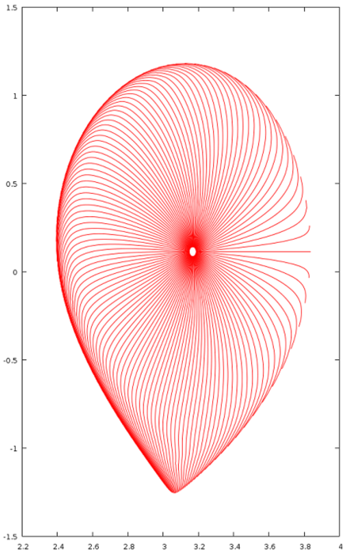
Beyond
A lot more diagnostics exist, for example:
jorek2_connection2
jorek2_diagno
jorek2_fieldlines_vtk
jorek2_import_perturbation
jorek2_povray
jorek2vtk_GaussVortTerms
jorek_diagnostics
jorek_to_helena
...
Some of them in active use, some may need repair before they become useful again. In case you need to look at a particular aspect of a simulation, it's always a good idea to quickly ask whether a solution for your problem already exists. If not, it would be great if you implement your diagnostics in a way that makes it useful for the whole community. Feel free to ask for advice regarding the best way to do that (new program, integrated with jorek2_postproc etc).